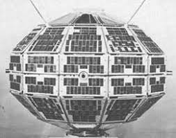
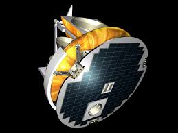
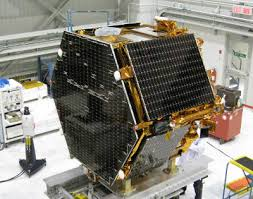

Total number of Satellites launched till date: 65
Success: -
Failure: -
Active Satellites: 37
Operational Satellites by Purpose
Communication: 5
Earth Observation: 8
Navigational/GPS: 11
Space Science: 13
List of Satellites
-
It was Canada's first satellite, and the first satellite constructed by a country other than the Soviet Union or the United States. Alouette 1 is a that studied the ionosphere.Launch Date: September 29, 1962
Operational Till: 30 September 1972
Purpose: Ionospheric
Weight: 145.6 kg
Power: -

-
SCISAT-1 is a Canadian satellite designed to make observations of the Earth's atmosphere.Launch Date: 13 August 2003
Operational Till: Still Operating
Purpose: Remote Sensing
Weight: 260 kg
Power: -

-
Cascade, Smallsat and Ionospheric Polar Explorer (CASSIOPE),[5] is a Canadian Space Agency (CSA) multi-mission satellite operated by the University of Calgary. The main objectives are to gather information to better understand the science of space weather, while verifying high-speed communications concepts through the use of advanced space technologies.Launch Date: 29 September 2013
Operational Till: Still Operating
Purpose: Technology Communications Research
Weight: 500 kg
Power: 600 W
